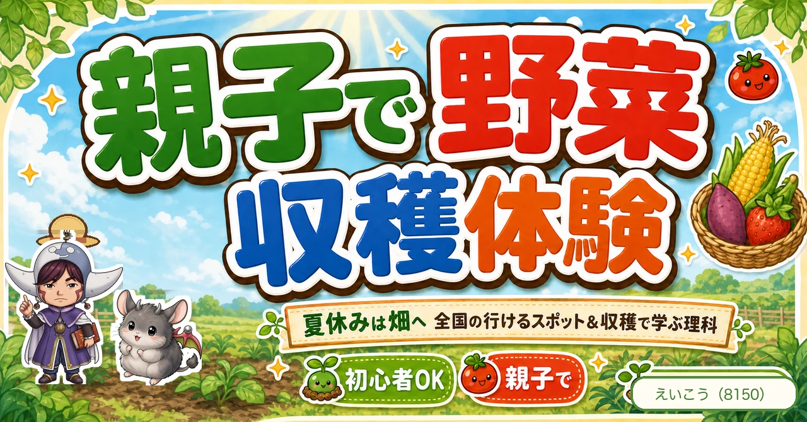
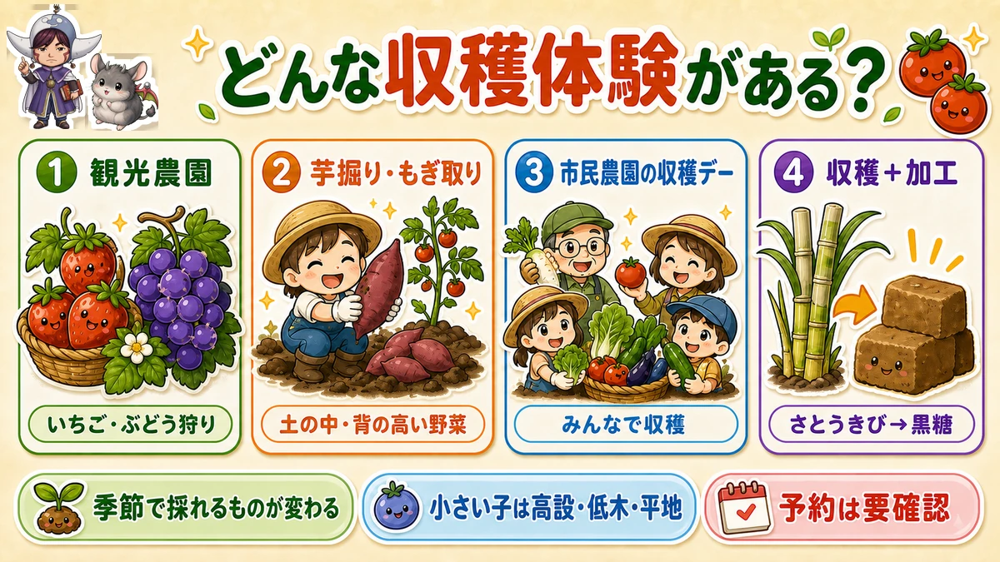
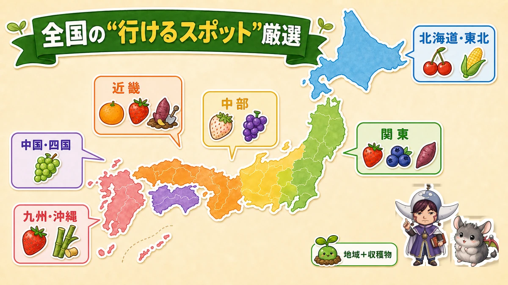
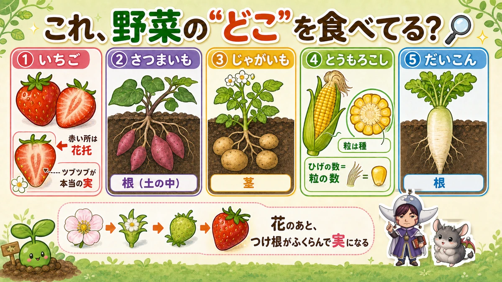

夏休みは畑へ🧺 親子で野菜収穫体験！全国の“行けるスポット”と収穫で学ぶ理科

🗨️「家庭菜園、気になるけど何から始めれば…」
🗨️「夏休み、子どもとどこ行こう？」
🗨️「野菜がどう実るのか、実物を見せてあげたい」
どうも、8150（えいこう）です🌱 家庭菜園歴8年、有機・無農薬でやってる、野菜と理科が好きな人間です。
いつもは「育てる」話ですが、今日はちょっと寄り道。“畑に行く”話をします。
じつは、まだ家庭菜園を始めていない人こそ、収穫体験がいちばんの入口なんです。土も道具もいらない、失敗もない。その日に採れた野菜を持って帰れて、子どもは「野菜ってこうやってできるんだ！」と目を輝かせる。夏休みにぴったりですよ☺️
📖 この記事の目次
なぜ「収穫体験」から始めるといいの？
- 失敗ゼロ・手ぶらでOK：育てる苦労なしで、いきなり“いちばん楽しい収穫”だけ味わえます。
- 子どもが理科好きになる：いちごが土の上、さつまいもが土の中、とうもろこしが背の高い茎に…実物を見た経験は教科書よりずっと忘れません。
- “うちでも育てたい”につながる：採れたての味を知ると、自然と「家でもやってみたい」に。家庭菜園の最高の入口です。
どんな収穫体験があるの？（選び方）

ざっくり4タイプ。
- 企業ファーム・観光農園：いちご狩り・ぶどう狩り・みかん狩りなど。設備が整っていて初心者・小さい子も安心。
- 芋掘り・とうもろこしもぎ：土の中・背の高い野菜を“自分で”収穫。ダイナミックで子どもが大喜び。
- 市民農園・農園の収穫デー：地域の畑で旬の野菜を。
- 収穫＋加工体験：さとうきびを刈って黒糖づくり、など。
選ぶときのコツ。
- 季節で採れるものが変わる（いちごは冬〜春、ぶどう・とうもろこしは夏〜秋、みかんは秋〜冬）。行きたい時期に何が採れるかで選ぶ。
- 小さい子連れは「高設栽培・低木・平地」が安心（立ったまま摘める・しゃがまなくていい）。トイレ・ベビー設備の有無も要チェック。
- 予約要否を必ず確認（人気園は完全予約制も多い）。
参考に、企業ファームの身近な例が キユーピーの「深谷テラス ヤサイな仲間たちファーム」（埼玉県深谷市）。マルシェやレストラン併設で、ワンコインの収穫体験もやっています。「野菜にときめく」がコンセプトの、まさに入口にぴったりのスポットです。
全国の“行けるスポット”厳選（地域別）

⚠️ 時期・料金・予約は変わります。おでかけ前に必ず各農園の公式サイトで最新情報をご確認ください。 天候や生育で開催が前後することもあります。
「野菜収穫体験 〇〇県」と検索すると、お近くのスポットが出てきます。ぜひ夏休みの体験に✨️
北海道・東北
- さくらんぼ山観光農園（北海道・仁木町）／さくらんぼ・プラム・プルーン・ぶどう・りんご／6月中旬〜10月下旬・個人は予約不要。踏み台完備で親子OK。公式サイト
- 八剣山果樹園（北海道・札幌市）／いちご・さくらんぼ＋じゃがいも掘り（8月中旬〜9月上旬）・とうもろこしもぎ取り（8月下旬〜9月下旬）。果物＋土物の両方が楽しめる。公式サイト
- 王将果樹園（やまがたさくらんぼファーム）（山形県・天童市）／さくらんぼ・もも・ぶどう・りんご／さくらんぼは6月中旬〜7月中旬・予約推奨。公式サイト
関東
- 深谷テラス ヤサイな仲間たちファーム（埼玉県・深谷市）／野菜収穫体験（色とりどりの野菜にふれ合い、食べることの楽しさや大切さを体験）。キユーピーグループ運営。公式サイト
- いちごの里（栃木県・小山市）／いちご5品種食べ比べ（12〜5月）・ぶどう（8〜9月）・ブルーベリー（7月下旬〜8月中旬）／完全予約制・幼児料金あり。公式サイト
- 希望の丘農園（群馬県・高崎市）／ブルーベリー狩り食べ放題（6月下旬〜8月中旬）／個人は予約不要・低木で小さな子も自分で摘める。公式サイト
- ふぁいんファーム（千葉県・千葉市）／さつまいも掘り（例年10〜11月の土日祝）・いちご狩り・ブルーベリー狩り／多目的トイレ・ベビールーム完備。公式サイト
中部
- 名古屋みなと農園（愛知県・名古屋市港区）／とれたての野菜のおいしさと、畑ならではの自然と共存する空間を、都市農業で届ける農園。
- 早川農園（静岡県・静岡市）／久能の石垣いちご狩り（12月〜5月上旬）／2歳〜対応・予約優先。明治発祥の伝統栽培。公式サイト
- 久保田園（山梨県・甲州市勝沼）／ぶどう狩り（巨峰・安芸クイーンなど多品種もぎ取り・例年8〜9月）。公式サイト
近畿
- キッズファームin京都大原（京都府・京都市左京区）／棚田と地域の公民館を活用し、子育て世代を対象に「畑での野菜作り」と「食育活動」に取り組む。
- 観音山フルーツガーデン（和歌山県・紀の川市）／みかん狩り（完熟温州・時間無制限食べ放題／10月中旬〜1月上旬）・個人は予約不要。天保年間創業の老舗。公式サイト
- あすか夢耕社（奈良県・明日香村）／いちご狩り（あすかルビー・高設栽培／1〜5月末）・完全予約制／立ったまま収穫で親子・車椅子OK。公式サイト
- 観光農園 南楽園（大阪府・堺市）／みかん・ぶどう・なし・いちご狩り＋さつまいも掘り（9月中旬〜10月下旬）・じゃがいも掘り（5月下旬〜6月下旬）・だいこん引き。一年中いろんな味覚狩り。公式サイト
中国・四国
- ソニックファーム（広島県・東広島市）／心豊かな菜園ライフを体験できる、各種メニューや施設を用意している農園。
- 美作農園（岡山県・美作市）／ぶどう狩り（シャインマスカット・ニューピオーネなど／8月中旬〜10月上旬）・2歳〜対応・予約制。公式サイト
- 戸田果樹園（愛媛県・西条市）／ぶどう狩り（8月上旬〜10月）・みかん狩り（10月下旬〜）／3歳〜・平地で親子OK・予約制。公式サイト
九州・沖縄
- 四時農業（福岡県・福岡市）／普段はなかなか見られない、野菜の発芽したばかりの小さな芽や、かわいいお花に出会えることも。
- らいおん果実園（福岡県・筑前町）／いちご狩り（あまおう・紅ほっぺなど多品種食べ比べ／12月中旬〜5月中旬）・完全予約制／2歳以下無料・駐車場100台。公式サイト
- 沖縄体験ニライカナイ（沖縄県・恩納村）／さとうきび刈り＋黒糖づくり体験（専属指導員付・要予約）。収穫から加工まで体験できる。公式サイト
🧺 あると便利な持ち物
手ぶらでもOKですが、これがあると快適です。とくに芋掘りは“泥だらけになる前提”で。
- 軍手・子ども用手袋（土や枝から手を守る）
- 長靴・汚れてOKの服・着替え（芋掘りは泥だらけに！）
- 虫よけ・帽子・日焼け対策（夏の畑は日差しが強い）
- クーラーボックス＆保冷剤（採れた野菜・果物を持ち帰る）
- レジャーシート・飲み物（休憩に）


学ぶ：収穫の“その場”でできる、身近な理科🔬

ただ採るだけじゃもったいない。収穫の場は、最高の理科室なんです。子どもにこう聞いてみてください。
❓ クイズ：これ、野菜の“どこ”を食べてるでしょう？
- いちご…赤い部分は、じつは“実”じゃありません。表面のツブツブ（ゴマみたいなの）が本当の実。赤い所は花の土台（花托）がふくらんだもの。
- さつまいも…食べてるのは根。じゃがいもは土の中だけど茎。
- とうもろこし…粒ひとつひとつが種。ひげの数＝粒の数なんですよ。
- だいこん・にんじん…根。土の中でまっすぐ伸びてます。
先が尖っていれば根、丸くなっていれば茎、と覚えれば中学入試ではOK。⇒根は地面を掘って伸びないといけないから、先が尖ってるんですね♫
❓ もうひとつ：この実、どうやってできたと思う？
花が咲いて、そのつけ根がふくらんで実になります。「花のあと、ここが大きくなったんだよ」と実物で見せると、子どもの中で“花→実”がつながります。
そして芋掘りの醍醐味は、掘るまで見えないワクワク。「どのくらい大きいかな？」と土を掘る時間そのものが、土の中で野菜が育つことを体で教えてくれます。
帰り道に「うちでも、育ててみる？」——この一言が言えたら大成功です☺️
まとめ
- 家庭菜園の入口は“収穫体験”。失敗ゼロで、野菜を好きになれる
- 季節で採れるものが違う。行く前に公式サイトで時期・予約を必ず確認
- 収穫の場は最高の理科室。「どこを食べてる？」を親子でクイズに
- 気に入ったら、次は“育てる”へ。かんたんな葉物なら初心者でもすぐ採れます
夏休み、ぜひ親子で畑へ。土のにおい、採れたての甘さ、掘り出す瞬間の歓声——それ全部が、いちばんの学びです🌱
次回は、無農薬で夏の畑を守る「虫対策」。「葉が穴だらけ」「気持ち悪くて心が折れそう」——そんな真夏を、農薬なしで乗り切る“寄せない・見つける・捕る”の3段構えをまとめます。今週末に公開しますね🐛
あわせて読みたい